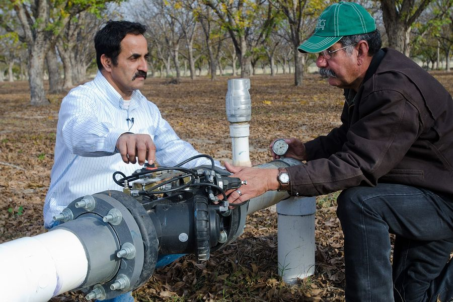

Farm manager, agronomist
20 minutes a day
6 steps, in order
A screen recording of the whole process, start to finish, in the real product.
Step by step
Clips
Beside the full walkthrough, each step gets its own short recording, so you can jump straight to the part you need.
Support
Three channels beside the documentation. All three pages are placeholders for now and will be designed next.